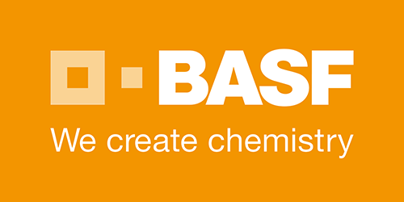

Yellow Rust Map
The data generated by our field pathogenomics study and hosted on this site is
licensed under a Creative Commons Attribution-NonCommercial-ShareAlike 3.0 Unported License. Our goal is to make
the
genotypic and phenotypic data of wheat yellow rust isolates collected across the world rapidly and broadly
available
to the scientific community. As highlighted by the BROAD institute, the genome sequencing community has adopted
a
statement of principles for the
distribution and use of
large-scale data. We also follow these principles and urge users to follow them as
well.
We specifically ask that you do not distribute the original data from this site without our consent and please redirect others to this website. Likewise, if you carry out significant analysis of the data we would encourage you to contact us so it can be hosted on the website to continue to build up this resource. It is our intention to publish the work of this project in a timely fashion and we welcome collaborative interaction on the project and analyses.
We specifically ask that you do not distribute the original data from this site without our consent and please redirect others to this website. Likewise, if you carry out significant analysis of the data we would encourage you to contact us so it can be hosted on the website to continue to build up this resource. It is our intention to publish the work of this project in a timely fashion and we welcome collaborative interaction on the project and analyses.
 |
 |
 |
 |
 |
|
|  |  |
 |